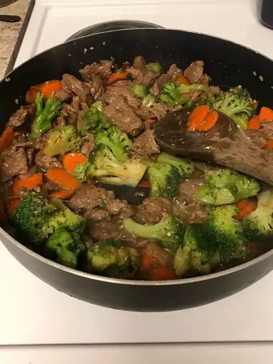

Amazing Beef Stir-Fry Recipe

Description
Quick and easy beef stir-fry that you can make on my busiest weeknights. Uploaded by inesgosner
Ingredients
- 2 tablespoons vegetable oil
- 1 pound beef sirloin, cut into 2-inch strips
- ½ cups fresh broccoli florets
- red bell pepper, cut into matchsticks
- 2 carrots, thinly sliced
- 1 green onion, chopped
- 1 teaspoon minced garlic
- 2 tablespoons soy sauce
- 2 tablespoons sesame seeds, toasted
Steps
- Heat vegetable oil in a large wok or skillet
over medium-high heat; cook and stir beef until browned, 3 to 4 minutes.
- Move beef to the side of the wok and add broccoli, bell pepper,
carrots, green onion, and garlic to the center of the wok. Cook and stir vegetables for 2 minutes.
- Move beef to the side of the wok and add broccoli, bell pepper, carrots,
green onion, and garlic to the center of the wok. Cook and stir vegetables for 2 minutes.
- Serve hot and enjoy!
Enjoy your delicious Beef Stir-Fry!